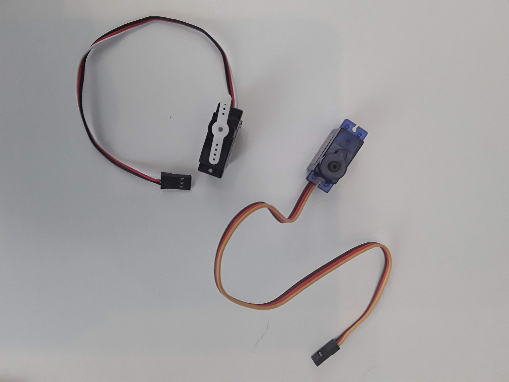
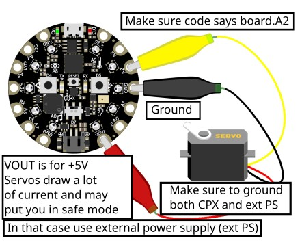
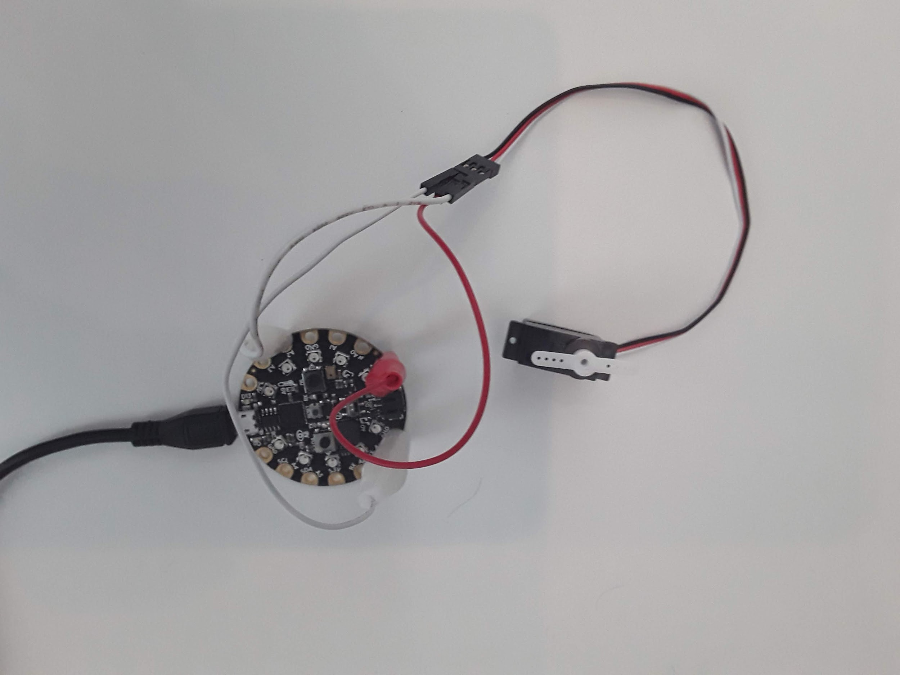
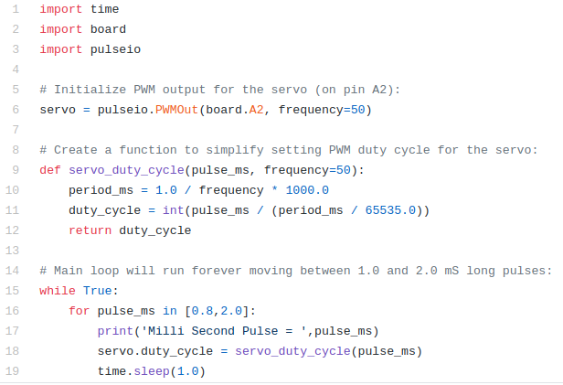
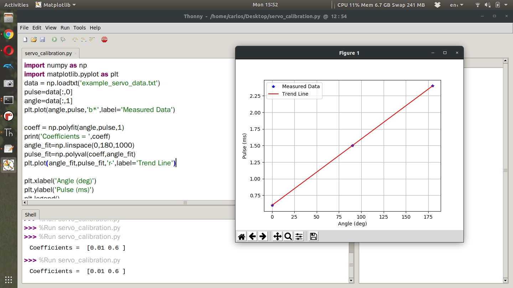

Section 18.3 Getting Started
For this lab we are going to learn how to drive a servo. Servos accept what are called PWM signals which are basically square waves of varying frequency. The servo itself has a microprocessor on board that turns a DC motor based on the incoming PWM frequency which is typically called a duty cycle. The DC motor runs through some gear to rotate a shaft. Because of this rotation, you can make a number of things move! Servos are used for all sorts of things, opening doors, deflecting control surfaces on RC aircraft and many more! The neat thing about PWM signals is that they can not only move servos but they can also drive speed controllers to turn 3 phase motors and even change the light intensity of LEDs. Servos typically come in two different color schemes as shown below.

As you can see, servos have 3 pins (GND, PWR, SIGNAL). A wiring diagram of a servo connected to the CPX/CPB is shown below (Couresy of Kattni Rembor).

The brown or black wire is GND, the red wire needs to go to a 5V signal so for the CPX it needs to go to the VOUT pin and the yellow or white wire is the signal wire which need to go to an analog port on the CPX that supports PWM signals. Which ones support PWM signals? Adafruit Learn has a great description of which pins support PWM signals but as a quick check you can use the following analog pins: A1, A2, A3, A6 and A7. In my circuit I just picked pin A2 since I’ve been using it so much in the past.

Very important: It is recommended to power a servo through an external power supply instead of the CPX. Servos can draw a lot of current and the CPX although it supports 5V can only provide so much power (P). Remember that P = VI so if P is low it means current is low. If the servo pulls more current than the CPX can provide the CPX will “brown out” which means it will go into a safe-mode setting. If you have the AA power supply you may consider doing that. For small servos you hopefully won’t have any issues.
As I said before, a servo takes in a square wave. The square wave has a duty cycle in units of microseconds. If you send a roughly 500 us square wave to a servo it will rotate all the way to the left. If you send a roughly 2500 us signal to the servo, it will turn all the way to the right. The code to send PWM signals has been thoroughly explained in the Adafruit Learn system. I also have a simple servo.py script on Github. In this code as usual the top 3 lines are used to import the necessary modules. The pulseio module is used here to create a servo object on line 6 by connecting to pin A2. Make sure to change the pin to whatever pin you have the signal wire hooked up to. Lines 9-12 create a function that pulse in milliseconds and compute the duty cycle of PWM signal. Lines 16-19 then kick off an infinite while loop where a 800 us signal is sent to the servo and then a 2000 us signal is sent using a for loop which starts on line 16. You’ll see servo command on line 18 which is responsible for sending the microsecond signal to the servo. The function servo_duty_cycle converts the pulse in milliseconds to a duty cycle. The value is then passed to the attribute of the servo object servo.duty_cycle. If you put this code on the CPX and run the code you will hopefully see your servo turning left and right in 1 second intervals. I did this project myself and posted a YouTube video about it.
Besides making the servo move back and forth I’d like you to vary the pulses on line 16 SLOWLY until the servo can’t move any farther. This line of code is a for loop which loops through the array currently showing [0.8,2.0]. If you change that array to [0.9,1.2,1.5,1.8] the servo will move to a pulse in milliseconds of 0.9, 1.2, 1.5 and then 1.8. The for loop is a great way to loop through multiple commands. Using this array, determine the minimum pulse you can send to the servo and the maximum pulse you can send to the servo. If the servo makes a funny noise it means you sent a signal outside the bounds so try a different signal. Hence the need for moving the pulse signal slowly. If you change the array to just 1 number [0.8] the servo will just move to 1 angle and stay there forever. NOTE THAT IN CIRCUITPYTHON VERSION 7.0.0 YOU HAVE TO USE THE PWMIO LIBRARY INSTEAD OF THE PULSEIO LIBRARY.

If you notice, sending a pulse signal in microseconds moved the servo to a specific angle. Thing is I would like to be able to move the servo to a specific angle rather than having to just guess and check like we did in the last lab. So what we’re going to do is start at the minimum pulse signal you computed in the last project and then change the servo pulse in equal increments until we reach the maximum servo pulse signal. When I did this lab I found that 0.6 ms was just about the smallest I could get the servo to move. We’re going to call this 0 degrees. My maximum pulse signal ended up being about 2.4 ms. So I want you to test 10 different points between your specific maximum and minimum value which will hopefully be different for all of you. Everytime you test a pulse I want to measure the angle the servo makes with the minimum value being 0 degrees. Create a table of data with two columns. In the first column put pulse in milliseconds and in the second column put angle of servo in degrees. Use a protractor to measure the angle. If you don’t have a protractor make one or you can download a picture and hold your servo up to the screen. I did this project with just 3 data points and here are my data points. Again you need to have around 10 data points
| Pulse (ms) | Angle (Degrees) |
| 0.6 | 0 |
| 1.5 | 90 |
| 2.4 | 180 |
Take your table of data and put it into a spreadsheet and save the data as a CSV or simply put your data into a text file. Since I only had 3 data points I just put them into a text file. Plot the data in Python on your desktop computer with servo angle on the x-axis and duty cycle on the y axis. Using the data, determine if the data set is linear, quadratic or cubic. Fit a trend line to the data and plot your trend line on top of the data. If you need help with trend lines in Python you can watch this video I posted on Youtube. I also made a helpful python script with some fictitious data on Github that fits the data with linear and quadratic fits. Here is my data plotted alongside the trendline in Python. I sort of made up the data and made it perfect on purpose so my trendline is perfect. Yours will not be so perfect.

You’ll notice that I first import the data from the text file using the np.loadtxt function and then I use the polyfit and polyval functions to create the trendline. The polyfit function requires you to give it the X and Y axes and the order of the trendline which since the trend line is linear I sent it a 1 but you could easily do 2 for quadratic or 3 for cubic. I then print the coefficients which are [0.01 0.6]. This means my trend line looks like this.
\begin{equation}
Pulse = 0.6 + 0.01*Angle\tag{18.3.1}
\end{equation}
Where Pulse is in ms and Angle is in degrees. Now you have an equation where you can use angle in degrees to compute the pulse in milliseconds. In the code I’ve posted I then use np.linspace to create 1000 data points from 0 to 180 degrees and then use the polyval function to compute the pulse for all 1000 angles I created using the linspace command. I finally plot the trend line in red and use the remaining part of the script to create labels and legends. Once you have this plot write down your coefficients and create an equation like I did above. Again your numbers won’t be so neat. Once you have this equation, return to Mu and create a function using the def keyword that takes in an angle as an input and then returns a pulse signal in milli seconds. It will look sometime like this
def angle2pulse(angle):
return 0.6 + 0.01*angle
Note: Functions in python must be after all your imports but before your while loop. If you put this function inside your while loop the code will not work. Using that equation, modify your servo.py script to have the servo move through the following angles, 0, 45,90,135 (your servo may not travel to 180 degrees). Verify that your equation is working correctly by placing your protractor below the servo. Much of the code required for this project is not included because it is left as an exercise for the student.